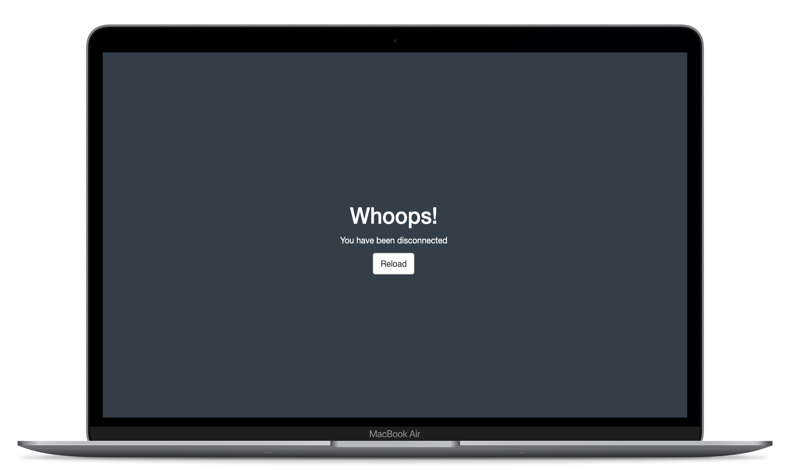

Good-looking problems: customise your Shiny disconnected screen and error messages.
Install
Install the stable version from CRAN:
install.packages("sever")
Get the development version from Github with remotes or devtools:
# install.packages("remotes")
remotes::install_github("JohnCoene/sever")
Usage
- Place
use_sever()in your Shiny UI. - Use
sever()to customise the disconnected screen. - Use
cleave()to customise hard error messages. - Use
chisel()to customise soft error messages.
Example
Place use_sever in your Shiny UI and use the sever function server-side, cancel the session from the terminal to see the customised screen.
library(shiny)
library(sever)
ui <- fluidPage(
use_sever(),
h1("sever")
)
server <- function(input, output){
sever()
}
shinyApp(ui, server)
